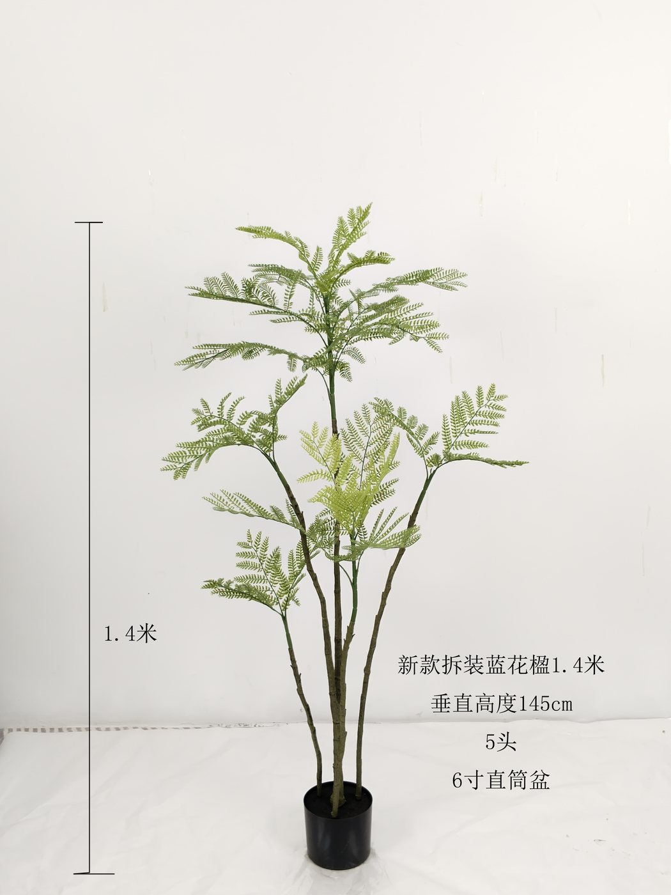
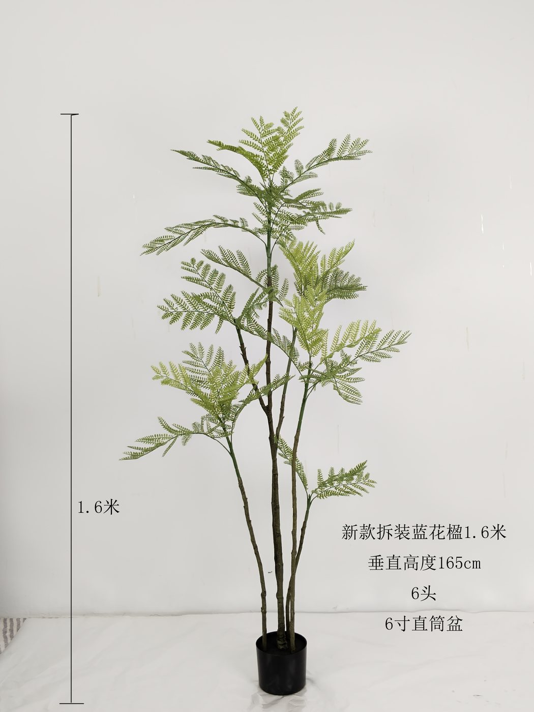

Flowering Trees
New Detachable Jacaranda
New Detachable Jacaranda is a seasonal flowering accent for gardens, patios, and commercial landscaping. This is a factory photograph of the actual product; exact dimensions, packing, MOQ, lead time and price are confirmed by the seller on inquiry.
Opens your email application; sending happens there.
Product information
New Detachable Jacaranda is a seasonal flowering accent for gardens, patios, and commercial landscaping. This is a factory photograph of the actual product; exact dimensions, packing, MOQ, lead time and price are confirmed by the seller on inquiry.
Specifications
| Product code | LC-N077 |
|---|